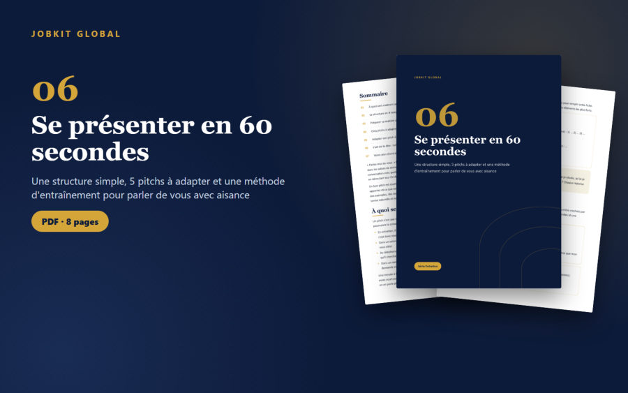
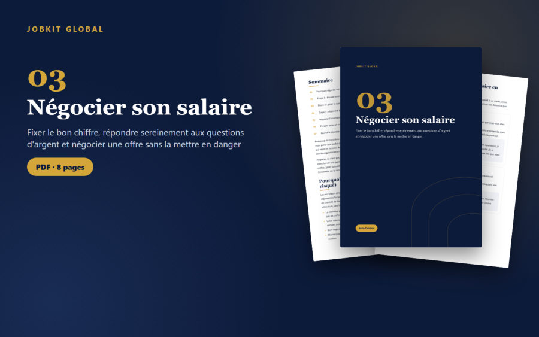
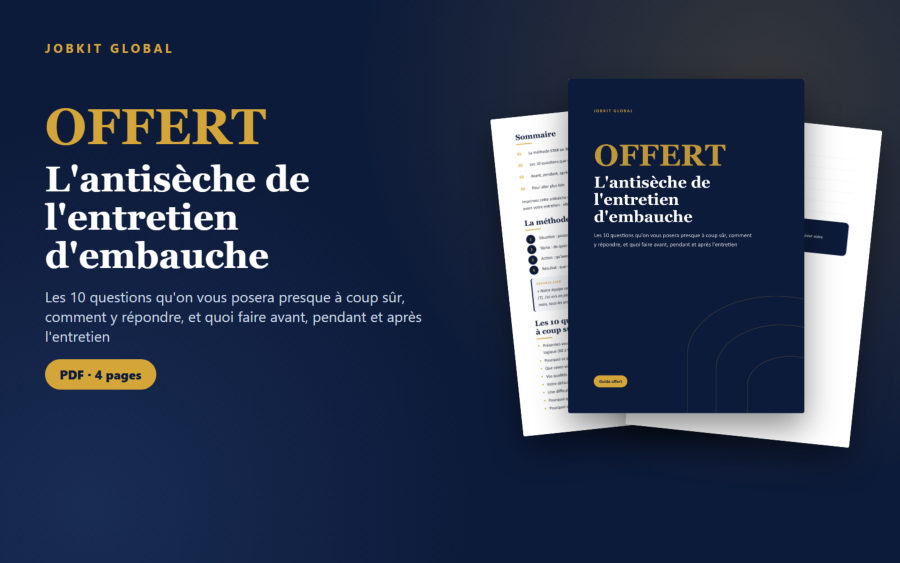

JobKit Global
Blog carrière
Des conseils concrets pour décrocher votre prochain poste. Un nouvel article chaque jour.
 CV
CVCV compatible ATS : votre CV passe-t-il le filtre des recruteurs ?
Ce qu'est un ATS, ce qui le bloque (Canva, colonnes, icônes), le test en 2 minutes et les corrections à faire
Lire l'article →
Série EntretienSe présenter en 60 secondes
Une structure simple, 5 pitchs à adapter et une méthode d'entraînement pour parler de vous avec aisance
Lire l'article → Série Recherche d'emploi
Série Recherche d'emploiLes mails de relance après candidature et entretien
Quand relancer, quoi écrire, et 6 modèles prêts à envoyer pour rester dans l'esprit du recruteur
Lire l'article → Série Entretien
Série EntretienRéussir un entretien en visio
Préparer son installation, maîtriser la caméra et garder son calme face aux imprévus
Lire l'article →
Série CarrièreNégocier son salaire
Fixer le bon chiffre, répondre sereinement aux questions d'argent et négocier une offre sans la mettre en danger
Lire l'article →
Guide offertL'antisèche de l'entretien d'embauche
Les 10 questions qu'on vous posera presque à coup sûr, comment y répondre, et quoi faire avant, pendant et après l'entretien
Lire l'article → Série Carrière
Série CarrièreRédiger un profil LinkedIn qui attire les recruteurs
Des formules de titre, un modèle de résumé et un plan de 7 jours pour être trouvé par les bonnes personnes
Lire l'article → Série Entretien
Série EntretienRépondre aux questions pièges en entretien
La méthode, 12 questions difficiles décryptées et des réponses à adapter en quelques minutes
Lire l'article →